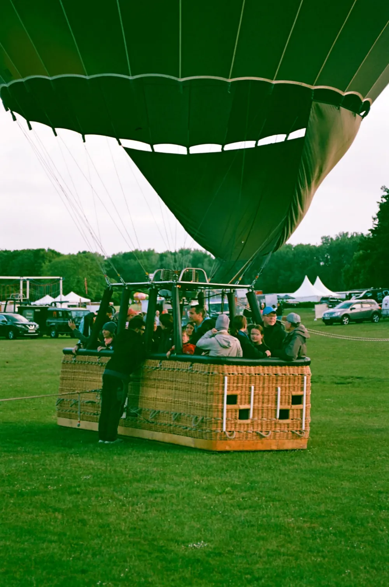
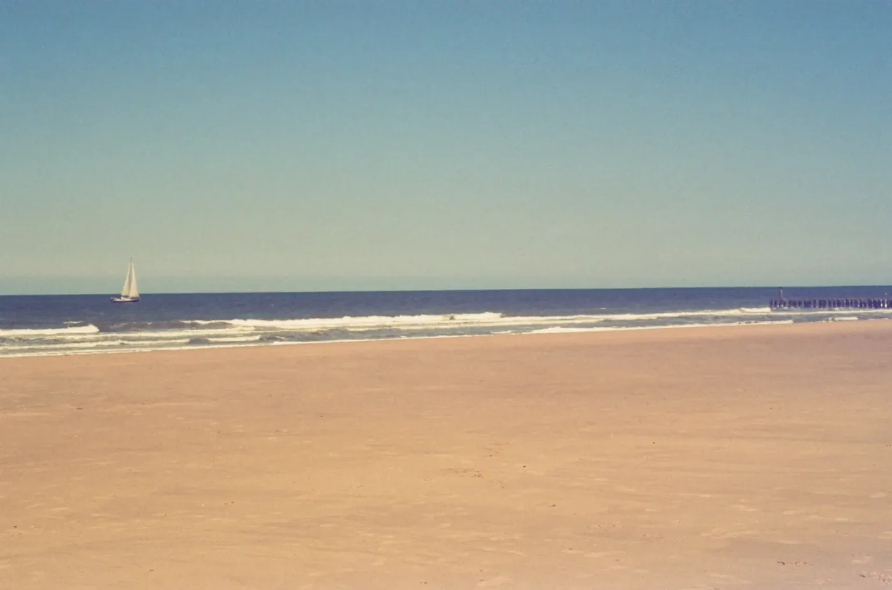

"찍기도 전에 색이 정해져 있는 필름이 있다. KONO가 딱 그렇다."
오스트리아 빈에 있는 KONO Manufaktur는 예전부터 '이펙트 필름'을 만들어 온 곳이다. 필름 표면에 미리 색을 입히거나 감광 특성을 살짝 비틀어서, 보통 필름으로는 안 나오는 색을 촬영 전부터 넣어 둔다. 이번 세 필름 MOJO · OFFBEAT · BEBOP도 그 연장선이다. 이름은 죄다 재즈에서 따왔다. 박자를 비껴가는 오프비트, 즉흥의 비밥, 그리고 분위기라는 뜻의 모조.
숫자는 셋이 똑같다. 다른 건 색 하나뿐이다.
MOJO — 핑크와 민트 사이
MOJO는 밝은 곳에 핑크·마젠타가 돌고, 그늘과 중간톤엔 옅은 민트빛이 낀다. 한 화면에서 두 색이 갈라지니 별것 아닌 하늘 한 장도 파스텔 꿈처럼 바뀐다. 대비는 낮고 톤은 말랑하다. 셋 중 제일 몽롱한 필름이다.
OFFBEAT — 전부 초록으로

OFFBEAT는 화면을 통째로 초록·청록 쪽으로 끌고 간다. 크로스 프로세싱을 떠올리게 하는, 셋 중 가장 센 색이다. 하늘이든 잔디든 사람 피부든 죄다 살짝 초록으로 밀리니, 평범한 장면을 낯설게 비틀고 싶을 때 쓴다. 호불호는 갈리지만 그만큼 확실하다.
BEBOP — 햇빛에 바랜 쪽

BEBOP은 셋 중 가장 따뜻하다. 앰버·골드가 얹히고 채도가 살짝 내려앉아서, 오래된 앨범에서 방금 꺼낸 사진 같은 기분이 든다. 제일 무난하게 예쁜 쪽이라, 이펙트 필름이 처음이라면 여기서 시작하길 권한다.
쓰기 전에 알아둘 것
셋 다 ISO 200 · C-41이라 현상은 동네 현상소에 그냥 맡기면 된다. 대신 색이 이미 들어가 있는 필름이니, 보통 필름처럼 화이트 밸런스가 맞아떨어지길 기대하면 안 된다. 스캔한 뒤 캐스트를 살리거나 눌러가며 쓰는 게 기본이다. 정확한 색을 원한다면 처음부터 다른 필름을 골라야 하고, 반대로 한 통으로 분위기를 통째로 입히고 싶다면 이만한 게 없다.
그러니까 이 필름들은 '정답'이 아니라 '성격'을 파는 물건이다. 핑크와 민트의 MOJO, 초록의 OFFBEAT, 앰버의 BEBOP. 같은 하루를 세 가지 기분으로 남겨 보고 싶은 사람에게는 꽤 재미있는 세 통이다.